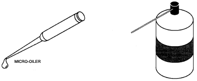
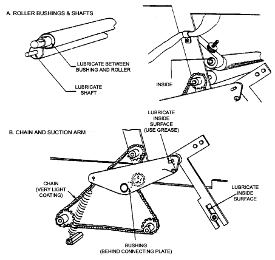
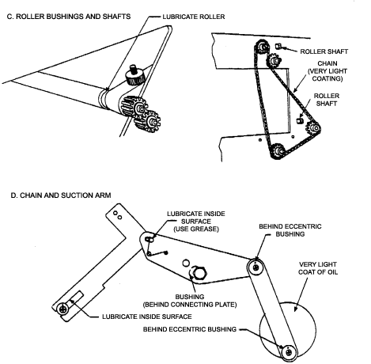

Operating Documentation
Direction 5112972-800, Rev# 2
CT Planned Maintenance Procedures
Operating Documentation |
| Required Persons | Preliminary Reqs | Procedure | Finalization |
|---|---|---|---|
| 1 | Timing Not Applicable | 10 mins | Timing Not Applicable |
Procedure Effectivity:
| Assembly: | MATRIX CAMERA |
| Subassembly: | |
| Purpose: | Lubricate Autoloader |
| Last Revised: | July 1995 |
| Item | Qty | Effectivity | Part# | Manufacturer | |
|---|---|---|---|---|---|
| Dry lubricant or micro-oiler | 1 | - | - | - | |
You should lubricate points in the autoloader where moving metal parts contact other metal parts. This includes roller shafts and bushings, the two drive chains, and the suction arm drive mechanism.
Lubricants: A micro-oiler ( Illustration 1) with light grade machine oil is recommended for lubricating all moving parts except where indicated in the following steps. This allows you to control precisely where and how much oil is applied. Always use a very light coating of oil and wipe away any excess. The autoloader runs at low RPM and does not require heavy lubrication. Dry silicone based lubricants are also acceptable ( Illustration 1). However, these usually come in aerosol spray cans and you must be extremely careful not to contaminate the interior of the autoloader with lubricant. Always mask off the area you intend to spray.
| NOTE: | Avoid using heavy grease or wet lubricants such as WD-40. These can be messy, and can attract dust and other debris after prolonged usage. |
Illustration 1: Types of Lubricants

Apply a light coating of the oil at the points indicated in Illustration 2 below.
Illustration 2: Autoloader Lubrication (Left Side)

Apply a light coating of the oil at the points indicated in Illustration 3 below.
Illustration 3: Autoloader Lubrication (Right Side)

No finalization required.